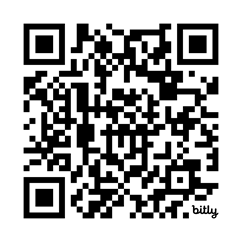

Kegiatan 1. Curah Pendapat (20 menit)
Bapak/Ibu, mengawali pembelajaran ini, silakan jawab pertanyaan berikut dan tuliskan di forum diskusi:
|
“Sudahkah Bapak/Ibu menganalisis CP terbaru BSKAP edisi revisi 2025? Materi Kimia apa saja yang menurut Bapak/Ibu sulit dipahami murid?” Silakan mengakses dokumen Capaian Pembelajaran yang dirilis oleh Kepala BSKAP disini: https://drive.google.com/file/d/1fXNp-yB6VcpV4hpBqo-8UML5Qw25Lirt/view) ? |
Kegiatan 2. Menyusun Draft Modul Ajar Kimia
Bapak Ibu, silakan laksanakan kegiatan berikut:
- Bapak/Ibu, berdasarkan CP terbaru BSKAP edisi revisi 2025, analisislah materi pembelajaran Kimia yang abstrak dan sulit dipahami murid sehingga membutuhkan bantuan KA!
- Identifikasilah aplikasi KA yang relevan dengan materi Kimia sesuai hasil analisis sebelumnya, kemudian tuliskan dalam Lembar Kerja 1!
- Setelah itu, Bapak/Ibu silakan membaca materi tentang penyusunan Tujuan Pembelajaran berbasis KA dengan prinsip SMART dan menonton video penjelasannya berikut ini.
- Bapak/Ibu silakan pilih salah satu materi dari hasil LK 1, kemudian rumuskan tujuan pembelajaran berbasis KA dengan prinsip SMART sesuai materi yang dipilih!
- Tuliskan rumusan tujuan pembelajaran kimia berbasis KA dengan prinsip SMART yang telah Bapak/Ibu susun dalam sebuah draft modul ajar!
- Bapak/Ibu dapat mengunduh contoh modul ajar berikut untuk dijadikan referensi

https://bit.ly/4oaUTvI - Presentasikan draft modul ajar yang telah Bapak/Ibu susun dalam forum!
Kegiatan 3. Mengisi Jurnal Refleksi
Bapak/Ibu silakan mengisi jurnal refleksi Kegiatan Belajar 1 pada Tautan Aktivitas Refleksi KB1